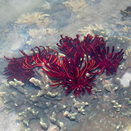
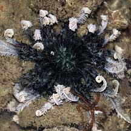
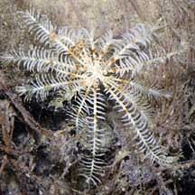
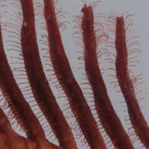
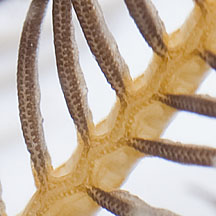
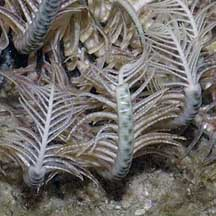
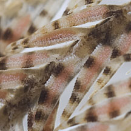
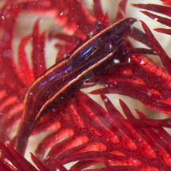

|
|
| crinoids text index | photo index |
| Phylum Echinodermata > Class Crinoidea > Order Comatulida |
| Feather
stars Order Comatulida updated Apr 2020
Where seen? These feathery animals are sometimes seen on some of our shores, generally near living reefs. They are also encountered by divers on our Southern reefs. Most feather stars only come out to feed at night. During the day, they hide in crevices or among coral, curling up their arms in tight coils. What are feather stars? Feather stars belong to Phylum Echinodermata. Although they may look similar to brittle stars, feather stars belong to a different Class Crinoidea. 'Crinoidea' means 'lily-like' in Greek. There are about 600 known living species of feather stars. Shallow-water crinoids are also called comatulids. |
 Many gathered on a hard coral. Sentosa Serapong, Jul 15 |
 Beautiful shades and colours. Changi, Jun 08 |
 Some can be tiny. Tanah Merah, Oct 09 |
| Features: Like other echinoderms,
feather stars are symmetrical along five axes, have spiny skin and
tube feet. Like brittle stars, feather stars have thin, long and highly
flexible arms. But crinoids are much more spectacular than brittle
stars, with an explosion of long feathery arms. The arms arise from a cup-shaped structure at the centre called the calyx. The calyx contains the digestive system and is covered by a soft membrane called the tegmen that may be rounded into a mound or look like a drum skin over the calyx. Unlike sea stars and brittle stars, the feather star's mouth facing upwards. The mouth may be in the centre of the disk or off to one side. The anus is also on the upperside, in some species at the top of a cone or tube that brings it above the feeding current to prevent fouling of the feeding process. The side of the feather star that faces downwards has a claw-like appendage called the cirri that is used to grip the surface. |
 Clinging on with the cirri. Beting Bronok, May 06 |
 Tiny tube feet on the pinnules. Pulau Hantu, Jan 12 |
 Channels along the pinnules and arm. Sisters Island, Aug 12 |
| Sometimes confused with brittle
stars which also have bristley arms. But brittle stars usually
only have 5 or 6 arms. More on how to tell apart bristley
animals and feathery animals. An armful: Juvenile feather stars start with 5 arms but repeatedly grow back two arms in place of each arm branch that is shed. This branching happens near the calyx. Thus feather stars usually have arms in multiples of 5, most have at least 10 arms. Some can have 80-200 arms! The arms are made up of large, well developed, jointed ossicles (plates made mostly of calcium carbonate). The ossicles are connected together like a bicycle chain. Along the length of the arms are rows of tiny finger-like structures called pinnules that give the animal its feathery look. Each pinnule is jointed and has a groove down the middle that joins to a groove running down the length of the arm. The grooves are lined by tube feet that produce mucus. Unlike in sea stars, the tube feet do not play a part in moving the animal but are used in collecting food and to breathe. The pinnules near the mouth protect the mouth from harm and keep the area clean. What do they eat? Feather stars feed on tiny drifting organisms and particles, gathering these passively from the water by adjusting their arms to maximise the filter feeding area relative to the water flow. The arms may form a flat fan or may be curved into a parabola like a satellite dish. Some may hide in crevices and only stick out some part of their arms to gather food. The mucus covered arms have tiny tube feet that flick edible bits into the grooves of the pinnule and arm. These bits are then slowly transported along the groove to the mouth. |
 Regenerating arm tips. Chek Jawa, May 05 |
 Pink eggs in the pinnules? Sisters Island, Aug 12 |
Some can be tiny. Tanah Merah, Oct 09 |
| Swimming stars: Feather stars
can move about by moving their arms. They crawl over soft sediments,
using their arms to drag themselves over the surface, lifting up the
central portion of their bodies. Their arms and pinnules have tiny
hooks that catch on the surface. They can also swim by thrashing their
arms in the water in co-ordinated strokes. However, feather stars
usually only crawl or swim to get away from predators. They usually
don't move around very much once they find a good spot to settle on.
Feather stars are usually perched on top of tall living or dead hard
corals, sponges and other sturdy anchors. Here, they extend their
arms into the currents and gather food. Falling apart: Like brittle stars, feather stars can purposely drop off an arm or two when threatened. The dropped arm may continue to wriggle to distract the predator while the brittle star escapes. The feather star is able to do this because the ossicles in its arms are connected by mutable connective tissue. The feather star can rapidly change the consistency of this tissue from rock hard to almost liquid. The arm eventually re-grows, but it takes about a month before it is fully restored. Fishes are the main predators of feather stars. Feather star babies: Feather stars have separate genders and are usually either male or female. The eggs and sperm are produced in swollen pinnules near the base of the arms. These are released into the water for external fertilisation. Feather stars undergo metamorphosis and their larvae look nothing like the adults. The form that first hatches from the eggs are bilaterally symmetrical and free-swimming, drifting with the plankton. They eventually settle down and develop into tiny stalked feather stars. After a few weeks, the cirri form and the little feather star breaks free from the stalk to become a free-moving adult. |
 Crab Sisters Island, Feb 15 Photo shared by James Koh on flickr |
 Shrimp St John's Island, Apr 12 Photo shared by Marcus Ng on flickr. |
 Worm Sisters Island, Aug 12 |
| Living off a star: Various small crabs, shrimps, worms, brittle stars and other tiny animals may live on a feather star. Some are found no where else. |


| Old stars: Feather stars are the most ancient and considered
the most primitive of echinoderms. In the fossil records, there were
10 times more feather stars and sea lilies than there are today. Star on a stick: Stalked stars, called sea lilies, are mostly found in deep waters 100m or lower. There are about 80 species of sea lilies. Some living sea lilies can have stalks up to 1m long! Human uses: Feather stars are not widely used for human purposes. Although they almost invariably die a slow death from starvation in marine aquariums, they are sometimes taken for the live aquarium trade. Status and threats: Some of our feather stars are listed among the threatened animals of Singapore. Stephanometra spicata, described in the 1960's as one of the most common feather stars on our shores, is today listed among the threatened animals of Singapore. Lamprometra palmata and Stephanometra indica were considered common in the late 1990's but were rarely encountered in a survey of echinoderms in the early 2000's. Like other creatures of the intertidal zone, feather stars are affected by human activities such as reclamation and pollution. Trampling by careless visitors also have an impact on local populations. |
| Feather stars on Singapore shores |


| Class
Crinoidea recorded for Singapore *from C. G. Messing & T. S. Tay. 29 June 2016. Extant Crinoidea (Echinodermata) of Singapore in red are those listed among the threatened animals of Singapore from Davison, G.W. H. and P. K. L. Ng and Ho Hua Chew, 2008. The Singapore Red Data Book: Threatened plants and animals of Singapore. **from WORMS. +from The Biodiversity of Singapore, Lee Kong Chian Natural History Museum.
|
Links
|